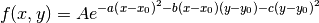
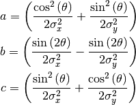
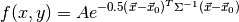
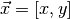
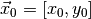
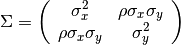
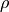

Gaussian2D¶
-
class
astropy.modeling.functional_models.Gaussian2D(amplitude=1, x_mean=0, y_mean=0, x_stddev=None, y_stddev=None, theta=0.0, cov_matrix=None, **kwargs) [edit on github][source]¶ Bases:
astropy.modeling.Fittable2DModelTwo dimensional Gaussian model.
Parameters: amplitude : float
Amplitude of the Gaussian.
x_mean : float
Mean of the Gaussian in x.
y_mean : float
Mean of the Gaussian in y.
x_stddev : float
Standard deviation of the Gaussian in x before rotating by theta.
x_stddevandy_stddevmust be specified unless a covariance matrix (cov_matrix) is input.y_stddev : float
Standard deviation of the Gaussian in y before rotating by theta.
x_stddevandy_stddevmust be specified unless a covariance matrix (cov_matrix) is input.theta : float, optional
Rotation angle in radians. The rotation angle increases counterclockwise.
cov_matrix : ndarray, optional
A 2x2 covariance matrix. If specified, overrides the
x_stddev,y_stddev, andthetaspecification.Other Parameters: fixed : a dict
A dictionary
{parameter_name: boolean}of parameters to not be varied during fitting. True means the parameter is held fixed. Alternatively thefixedproperty of a parameter may be used.tied : dict
A dictionary
{parameter_name: callable}of parameters which are linked to some other parameter. The dictionary values are callables providing the linking relationship. Alternatively thetiedproperty of a parameter may be used.bounds : dict
eqcons : list
A list of functions of length
nsuch thateqcons[j](x0,*args) == 0.0in a successfully optimized problem.ineqcons : list
A list of functions of length
nsuch thatieqcons[j](x0,*args) >= 0.0is a successfully optimized problem.See also
Notes
Model formula:

Using the following definitions:

- If using a
cov_matrix, the model is of the form: 
where , , and
 is the covariance matrix:
is the covariance matrix:
 is the correlation between
xandy, which should be between -1 and +1. Positive correlation corresponds to athetain the range 0 to 90 degrees. Negative correlation corresponds to athetain the range of 0 to -90 degrees.See [R6] for more details about the 2D Gaussian function.
References
[R6] (1, 2) http://en.wikipedia.org/wiki/Gaussian_function Attributes Summary
amplitudeparam_namesthetax_meanx_stddevy_meany_stddevMethods Summary
evaluate(x, y, amplitude, x_mean, y_mean, ...)Two dimensional Gaussian function fit_deriv(x, y, amplitude, x_mean, y_mean, ...)Two dimensional Gaussian function derivative with respect to parameters Attributes Documentation
-
amplitude¶
-
param_names= ('amplitude', 'x_mean', 'y_mean', 'x_stddev', 'y_stddev', 'theta')¶
-
theta¶
-
x_mean¶
-
x_stddev¶
-
y_mean¶
-
y_stddev¶
Methods Documentation
-
static
evaluate(x, y, amplitude, x_mean, y_mean, x_stddev, y_stddev, theta) [edit on github][source]¶ Two dimensional Gaussian function
-
static
fit_deriv(x, y, amplitude, x_mean, y_mean, x_stddev, y_stddev, theta) [edit on github][source]¶ Two dimensional Gaussian function derivative with respect to parameters
- If using a